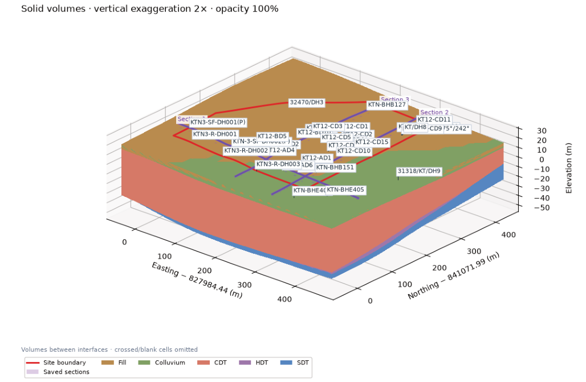

TUTORIAL 01 / DATA
Import and review borehole data
CSV is the primary input. AGS attachments add measured geology and available SPT values to matching boreholes.
Learn how to import boreholes, build layer surfaces, create geological sections and export drawings with GeoSketch.
Start the tutorial →
Data → Surfaces → Sections → Export
Import CSV, match AGS records and review borehole details.
02 ↗Generate layer grids and review contours, colours and 3D views.
03 ↗Draw an alignment, preview coverage and save a geological section.
04 ↗Create editable DXF drawings and export Surfer grid packages.
CSV is the primary input. AGS attachments add measured geology and available SPT values to matching boreholes.
Generate grids using licensed Surfer, then inspect the interpreted ground model in Plan and 3D.
Sections require generated surfaces. You can create and save multiple alignments in one project.
Review the drawing preview, choose the layers you need, and export editable CAD geometry.
Keep the working project and its exported drawings together.
Review inputs and settings before repeating an operation.
Ground investigation modelling and drawing tool.
Version 1.0.3Developed by Larry Yeung
Special thanks to David Tsang for the original concept, valuable insights, and guidance throughout the development.
From version 1.0.3, use About → Check for updates → Download & install update → Install & restart. Save unsaved projects when prompted. Updates install for your own Windows account and retain the previous version for recovery.
Download and extract v1.0.3 manually once to get this installer. Keep project/output files outside app folders. Managed devices may require IT approval.